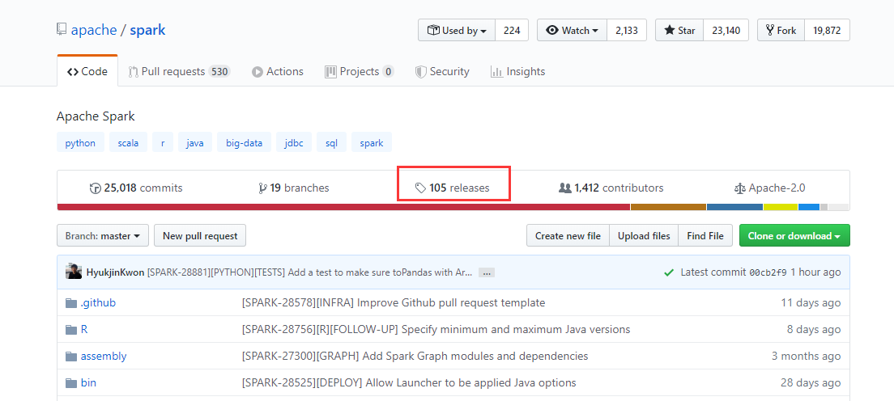
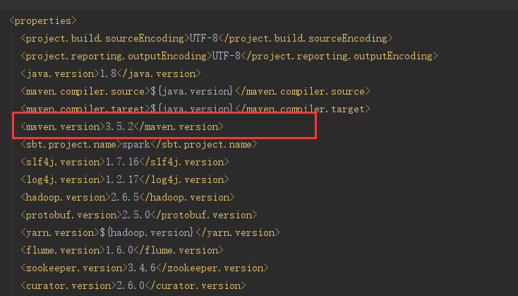
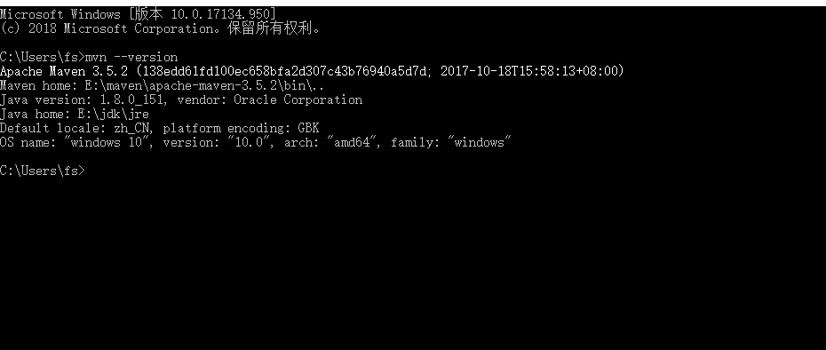
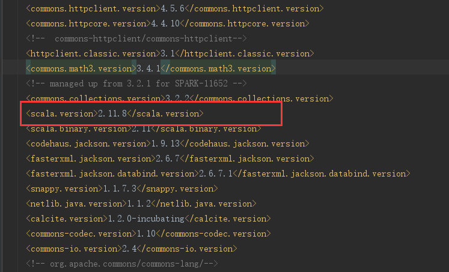
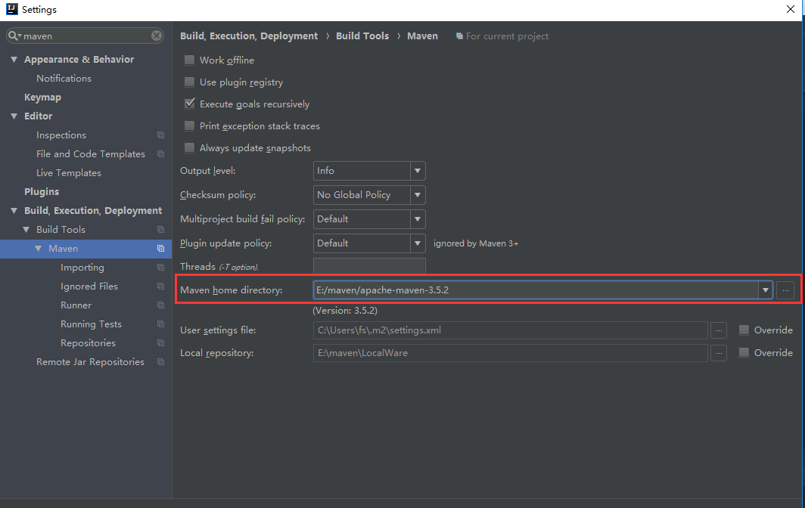
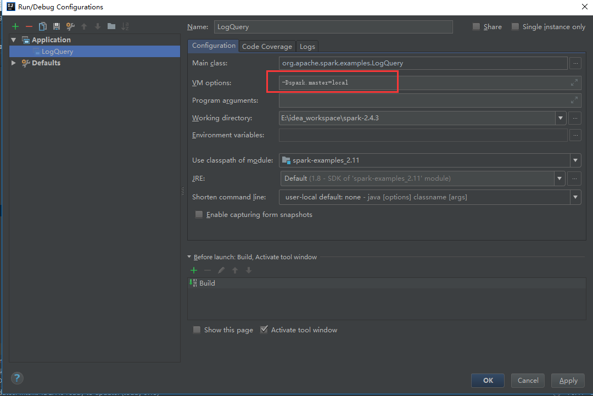
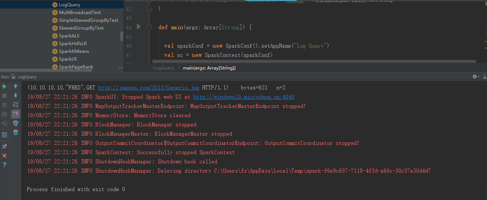

相信很多同学都想通过阅读一些框架的源码，来提高自己的代码能力，但往往在第一步，搭建环境的时候就碰了壁。
本篇就来介绍下如何在Windows下，将最新版的Spark2.4.3编译，并导入到IDEA编译器中。最后通过在IDEA运行Spark自带的一共Example代码结尾。
搭建Spark源码环境所需要准备的一些东西需要先准备好。这里也有我踩过的一些坑，我也会一并介绍。
首先需要先下载maven，并将maven的源地址修改为阿里源，相信很多同学都已经配置好maven了，这里简单提下，maven源地址在国外，不改成阿里源，那在下载依赖的时候，那速度会让你怀疑人生的。
然后下载下scala2.11.8/scala2.11.12，因为目前spark似乎还不支持2.12+，所以需要scala2.11+，至于2.11.8还是2.11.12，应该没什么影响，不过我自己机器上是2.11.8就是。
下载spark源码，不过不能直接github到spark的仓库里面直接下载，目前仓库里面的是3.+的测试版，应该要到releases里面去找。

不过我已经帮你们把那个链接找到了,复制到浏览器地址就有下载页。
下载完后解压，准备工作就算做完了。
直接导入项目是不行的，因为有些文件需要先编译才会产生，不过要编译环境也不难，之前不是已经配置过的maven嘛。将下载好的spark2.4.3解压，进入到其目录，打开cmd，运行如下命令就行
mvn -T 4 -DskipTests clean package
这里要注意一下，spark2.4.3目录下的pom.xml文件，有两个地方需要修改。第一个是pom.xml里面的

电脑上的maven版本可以通mvn --version这个命令查看。

比如我的电脑就是3.5.2，那么相应的pom.xml里面的
如果不修改的话，编译的时候是会报错的。
第二个要修改的地方是，修改pom.xml文件中的<scala.version>属性，默认是2.11.12，需要修改成自己电脑中的scala版本，这个下载的时候应该就会选择，不多介绍。

如果<scala.version>和你电脑上的scala版本不一致的话，会出现下面的错误：
Error:scalac: Scala compiler JARs not found
另外说一句，spark源文件中有多个pom.xml，只需要改根目录下的pom.xml文件就可以了。完成修改后，就能开始编译了。
对了，编译的时候会比较慢，而且编译的时候也会占用电脑比较多的资源，建议睡觉前编译:)
编译完成后，现在就可以导入到IDEA里面了，直接
open => ${spark2.4.3}_path/pom.xml => Open as Project
导入后先别着急，需要先改一下IDEA的maven配置，
File => Setting => 直接搜索maven => 更改Maven home directory
即更改如图所示的地方，

因为IDEA会有自带的maven，需要改成电脑上自己安装的，否则因为你是用自己电脑上maven编译的，这时候用IDEA的maven来处理的话，某些依赖会报以下错误：
Library Maven: has broken classes path:
其实就是找不到啦。
OK，导入成功之后，别急，还有最后一个地方需要修改。
Menu -> Run -> Edit Configurations -> 点左上的 + -> Application
在VM options: 里面，加上-Dspark.master=local。这个的作用是让spark直接在本机启动。

配置到这里就结束了，接下来可以运行一个example看看了。
到examples -> src -> scala -> LogQuery -> 右键 Run
就能成功看到运行了第一个示例spark程序了。

总结起来，就是先编译，再导入，最后运行。
这个过程说起来简单，不过其实有些坑却很容易让人半途而废，有些坑我已经踩过了，希望能帮到你们:)
如果你在这个过程中出现什么问题无法解决，也欢迎在本篇下留言，有空的话我也会帮忙看看的~
以上！